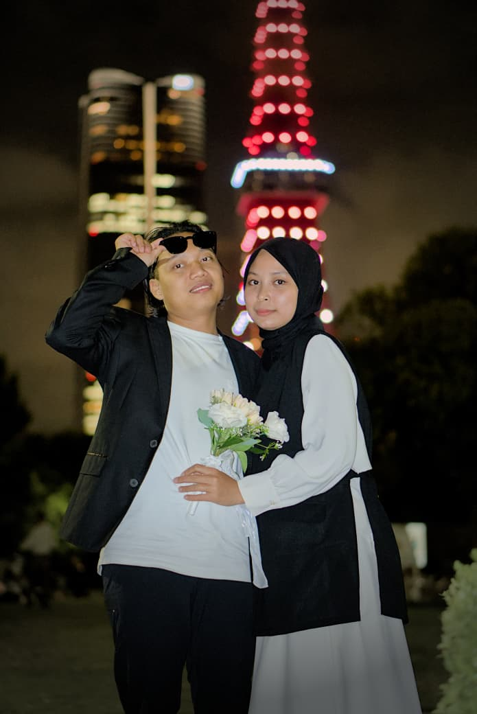

Galeri Foto





"Dan di antara tanda-tanda (kebesaran)-Nya ialah Dia menciptakan pasangan-pasangan untukmu..."
Akad & Resepsi:
Jumat, 7 November 2025
Pukul:
08:00 WIB - Selesai
Mempelai Wanita:
Rima Nur Faizah
Putri dari Bapak Sujono dan Ibu Sutrino Wati
Mempelai Pria:
Ajik Moh Arifin
Putra dari (Alm.) Bapak Parjono dan Ibu Sukarni
Alamat:
Desa Slungkep RT 02 / RW 01, Kayen, Pati
Bank: BNI
Atas Nama: Ajik Moh Arifin
No. Rekening: 1667807826
Bank: Mandiri
Atas Nama: Rima Nur Faizah
No. Rekening: 180006022931
Terima kasih atas doa dan kehadiran Anda...